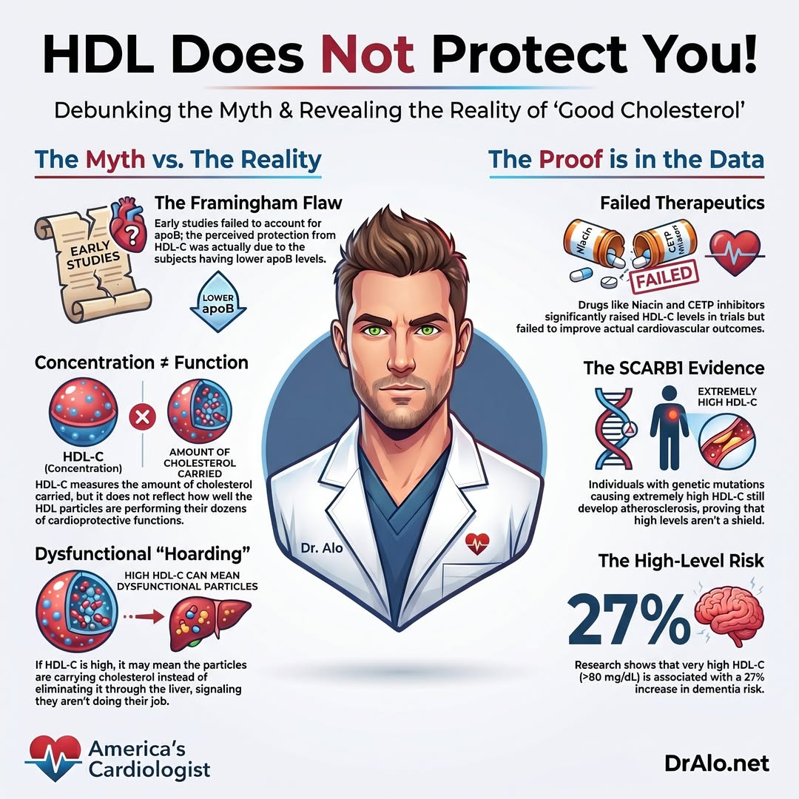

Drugs that raise HDL have repeatedly failed to cut cardiovascular events
Louis agrees with a shared post that five major trials of HDL-raising drugs (niacin, CETP inhibitors) failed to reduce events. He adds that risk falls only when HDL rises as a side effect of improved insulin sensitivity, and that some HDL subfractions might still prove protective.